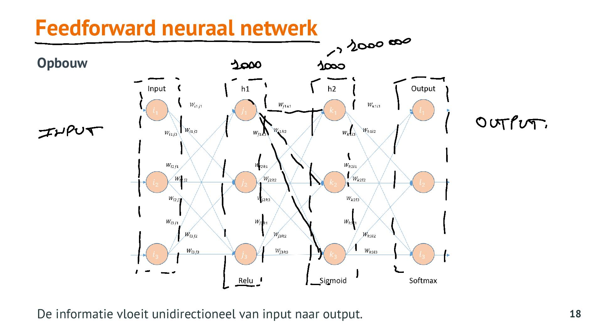

Introductie Neurale Netwerken
anki
Q: Wat is een neuraal netwerk ?
A: A neural network (NN) is a massively parallel distributed processor that has a natural propensity for storing experimental knowledge and making it available for use. It resembles the brain in two aspects:
- Knowledge is acquired by the network through a learning process.
- Interneuron connection strenghts known as synaptic weights are used to store the knowledge.
Q: Wat is een perceptron ?
A: Neuron van een artifieel neuraal netwerk
Q: Wat doet de activatie functie in een perceptron ?
A: De activatie functie bepaalt de output van de perceptron. Deze kan binair zijn, een getal/percentage bij regressie of een lijst van kansen op bepaalde labels/klassen.
Q: Geef een voorbeeld van een architectuur voor een artificieel netwerk
A: Feedforward Neuraal netwerk, LSTM (long short-term memory)
Q: hoeveel input/hidden/ouput layers heb je nodig bij NN ?
A: Die worden meestal iets overgedimensioneerd (eerst meer neuronen en hidden layers)
bij input ligt het aantal meestal vast = aantal features
bij output = afhankelijk van target (bij regressie maar 1 output, bij classificatie 1 neuron per klasse)
Q: Wanneer heb je one hot encoding nodig in de output laag van NN ?
A: Bij classificatie moet je het verwachte label omzetten in een vector via one hot encoding.
Q: Hoe is een feedforward neuraal netwerk opgebouwd ?
A: unidirectioneel van input naar output (geen loops)
alle neuronen van een laag zijn verbonden met alle neuronen van de volgende laag
verbindingen = weights (= zwakke of sterke verbinding)
tijdens training worden de weights ingesteld

Q: Wat is backpropagation learning bij neurale netwerken ?
A: een NN leert van achter naar voor, van output naar input. Obv de output van de neuronen wordt bepaald van welke neuronen het gewicht moeten bijgesteld om de beoogde output te hebben en dit wordt gedaan voor alle lagen van de NN.
Q: Waarom mag je geen patroon gebruiken bij het initieel invullen van de weights van een NN ? En wat is dan de juiste manier ?
A: omdat dit er toe kan leiden dat je een symmetrie krijgt in je NN en dan heb je twee delen in je NN dat hetzelfde doet wat je natuurlijk wil vermijden. Je moet de weights daarom random invullen.
Q: Hoe worden de gewichten bepaalt bij een NN ?
A: Initieel worden de gewichten random ingevuld en is de error functie zeer groot. Obv training (gradien descent met learning rate) worden de gewichten bijgesteld.
Q: Wat is er mis bij een NN als de error functie niet zakt ?
A: je NN leert niet bij waarschijnlijk te wijten aan een te grote learning rate. De weights worden te aggressief bijgesteld.
Q: Waarom is de step functie niet goed als activatie functie bij een NN ?
A: Omdat die functie enkel 0 of 1 als output heeft waardoor de gradient descent bij backpropagation niet weet welke kant die op moet en welke neuron verantwoordelijk is voor de error in de predictie.
Q: Waarom is de lineair function (Adaline) niet goed bij NN als activatiefunctie in hidden layer ? Waarom wel in de input layer ? In welke gevallen wel in de output layer ?
A: Lineaire functie blijft lineair en kan hierdoor geen informatie halen uit complexe data. In de input layer kan ze wel gebruikt worden omdat die de data onveranderd het netwerk instuurt.
Voor de output layer is ze goed bij regressie omdat deze functie het resultaat niet beperkt tot een waarde tss 0 en 1.
Q: Waarom is de sigmoid functie niet goed bij NN als activatiefunctie in hidden layer ?
A: Omdat de berekening zwaarder is en door het vanishing gradient probleem waarbij de uitlopers van de functie praktisch niet meer veranderen en de gradient descent dus niet kan bepalen in welke richting die moet evolueren.
Q: Wat is het voordeel om de Relu functie te gebruiken als activatiefunctie in een NN ?
A: Relu is niet lineair, en elke functie kan benaderd worden door een combinatie van Relu functies. Zeer efficient in rekenkracht. Een nadeel is wel dat neuronen dood kunnen zijn (sparse activation - veel activaties worden 0) en dode neuronen kunnen niet meer geactiveerd worden.
Q: Wat is het voordeel van Leaky Relu tov Relu als activatiefunctie bij NN ?
A: De Leaky Relu gaat niet dood.
Q: Welke activatie functie gebruik je het beste voor hidden layer en welke zeker niet ?
A: Voor de hidden layer probeer je eerst ReLu, dan Leaky ReLu. Sigmoid en Tanh niet voor hidden layer.
Q: Voor output layer bij een NN welke activatie functie moet je gebruiken voor regressie, classificatie ?
A: Voor de output layer lineair bij regressie. Softmax (meerdere klassen) / Sigmoid (1 klasse) bij classificatie.
Q: Hoe krijg je underfitting/overfitting bij NN ?
A: Als de dataset te klein is gaat het NN alles van buiten leren en krijg je overfitting. Als het aantal hidden layers te klein is of er te weinig neuronen zijn gaat het model underfitten.
Q: Wat kan je doen als je overfitting krijgt bij NN ?
A: Je kan :
- meer data hebben is beter, meer variatie
- drop outs
- minder lagen definieren (opletten voor underfitting !)
Q: Welke activatiefuncties kan je gebruiken bij NN en waar gebruik je die het beste voor ?
A: Beschikbare activatie functies:
- softmax > output layer
- relu > hidden layer
- sigmoid > output layer
- tanh
- linear > regression in output layer
Q: Welke learning rate optimizer kan je bij NN gebruiken ?
A: Optimizers :
- _SGD_ + Nesterov (Stochastic Gradient Descent) !
- RMSProp: meer geschikt bij recurrent networks
- Adagrad
- _Adam_ !
- Adamax
Q: Wat is een epoch bij NN ?
A: het aantal keer dat het neuraal netwerk de volledige training set te zien krijgt.
Q: Wat zijn iterations bij NN ?
A: Het aantal keer dat de weights worden bijgesteld. Is gelijk aan het aantal epochs maal het aantal batches.
Q: Wat vertelt batchsize ons bij NN ?
A: Het aantal samples dat het neuraal netwerk te zien krijgt vooraleer het de weights gaat updaten. Updaten van de weights gebeurt op basis van de gemiddelde fout van een batch.
Q: In welke modus kan NN de trainingset verwerken ?
A: Modussen :
- Batchmode: De batchgrootte is gelijk aan het aantal trainingsamples.
- Mini-batchmode : De batches zijn groter dan 1 en kleiner dan het aantal trainingsamples. (bijv batch_size = 32 dan ga je 32 trainingsdata tonen aan model, kijken hoe goed het presteert en op basis daarvan gewichten bij stellen)
- Stochasticmode : de batch grootte = 1. Na elke trainingsample is er een update van de weights.
Q: Wat zijn de voor- en nadelen van een kleine batch grootte(Mini-batchmode) ?
A: Voordeel :
- Kleine batches nemen minder geheugen in beslag.
- Meestal traint het netwerk sneller bij kleine batches.
- Kleinere batches geven sneller feedback.
Nadeel : - minder accurate schatting van de gradient. Netwerk stabiliseert zich op basis van de laatste training samples